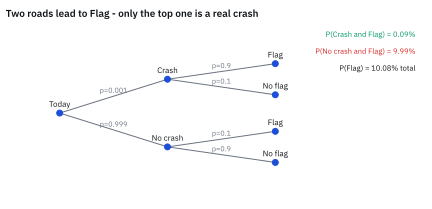
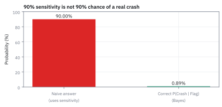
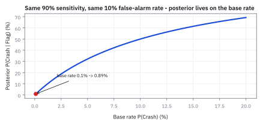
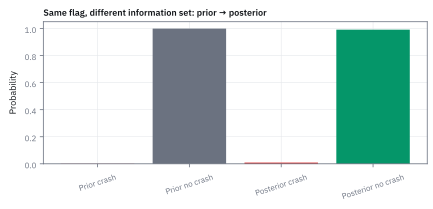
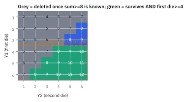

1.7 Bayes' Theorem
เมื่อได้ข้อมูลใหม่ เราควรขยับความเชื่อเดิมมากแค่ไหน
อาคารหนึ่งมีไฟไหม้จริง 1 วันในทุก 100 วัน เครื่องตรวจควันร้องทุกครั้งที่ไฟไหม้ แต่ในวันปกติก็ร้องเองเพราะไอน้ำจากครัว 5% ของวัน เช้านี้เครื่องร้อง โอกาสที่ไฟไหม้จริงคือเท่าไร?
เฉลย: ราว 17% หรือหนึ่งในหก ไม่ใช่เกือบแน่ ลองนับ 100 วัน: ไฟไหม้จริง 1 วัน เครื่องร้อง 1 วัน ส่วน 99 วันปกติ เครื่องร้องเองราว 5 วัน วันที่เครื่องร้องจึงมีราว 6 วัน และไฟไหม้จริงแค่ 1 ในนั้น
หัวข้อนี้ใช้วิธีนับแบบเดียวกันกับเครื่องเตือน crash ในตลาดหุ้น แล้วค่อยเขียนการนับนั้นเป็นสูตรที่ชื่อ Bayes' theorem ซึ่งใช้ปรับความเชื่อเมื่อได้หลักฐานใหม่ โดยคิดทั้งความแม่นของสัญญาณและความหายากของเหตุการณ์
ศัพท์ที่ใช้ในหัวข้อนี้
- conditional probability
- โอกาสของเหตุการณ์หนึ่งเมื่อรู้แล้วว่าอีกเหตุการณ์เกิด ใช้ตอบคำถามแบบ ‘ถ้าเครื่องดังแล้ว โอกาส crash คือเท่าไร’
- prior probability
- โอกาสของเหตุการณ์ก่อนเห็นหลักฐานใหม่ ใช้เป็นจุดตั้งต้นของการปรับความเชื่อ
- posterior probability
- โอกาสของเหตุการณ์หลังเห็นหลักฐานแล้ว ใช้เป็นคำตอบของ Bayes และเป็น prior ของรอบถัดไป
- likelihood
- โอกาสที่จะเห็นหลักฐานนี้ ถ้าสมมติว่าเหตุการณ์ที่สนใจเกิดจริง ใช้วัดว่าหลักฐานเข้ากับเหตุการณ์แค่ไหน
- base rate
- ความถี่ปกติของเหตุการณ์ในระยะยาว ก่อนมีสัญญาณใด ๆ ใช้เป็น prior และเป็นตัวที่คนลืมคิดบ่อยที่สุด
- sensitivity
- โอกาสที่เครื่องเตือนจะดังเมื่อเกิดเหตุจริง ใช้วัดว่าเครื่องจับเหตุได้ครบแค่ไหน
- false alarm rate
- โอกาสที่เครื่องเตือนจะดังทั้งที่ไม่มีเหตุ ใช้วัดว่าเครื่องผลิตเสียงหลอกมากแค่ไหน
- crash day
- วันที่ตลาดหุ้นร่วงแรงเกินเกณฑ์ ในหัวข้อนี้คือร่วงเกิน 5% ในวันเดียว ใช้เป็นเหตุการณ์หายากที่เครื่องพยายามจับ
- VIX
- ดัชนีที่วัดว่าตลาดหุ้นสหรัฐคาดว่าจะเหวี่ยงแรงแค่ไหน เทรดเดอร์เรียกว่า fear gauge ใช้เป็นวัตถุดิบของเครื่องเตือนในตัวอย่างนี้
- law of total probability
- กฎที่หาโอกาสของหลักฐานโดยแยกเป็นกรณีที่ไม่ทับกันและครอบคลุมทุกแบบ แล้วบวกโอกาสของแต่ละกรณีเข้าด้วยกัน ใช้สร้างตัวส่วนของ Bayes
- regime
- สภาพตลาดช่วงหนึ่งที่พฤติกรรมราคาต่างจากช่วงอื่นชัดเจน เช่นช่วงสงบ ช่วงตึงเครียด ช่วงวิกฤติ ใช้เป็นกรณีที่มากกว่าสองแบบในขั้นที่ 8
- Prosecutor's Fallacy
- ความผิดพลาดที่เอาโอกาสเห็นหลักฐานเมื่อเหตุเกิด ไปใช้แทนโอกาสที่เหตุเกิดเมื่อเห็นหลักฐาน ชื่อมาจากอัยการที่พูดแบบนี้ในศาล
- backtest
- การลองรันสัญญาณหรือกลยุทธ์กับข้อมูลในอดีต ใช้นับว่าสัญญาณติดในวันขึ้นและวันลงกี่ครั้ง ก่อนลงเงินจริง
- edge
- ส่วนที่โอกาสชนะสูงกว่าค่าปกติเพราะมีสัญญาณ เช่นจาก 52% เป็น 61.9% ใช้ตัดสินว่าสัญญาณคุ้มค่าธรรมเนียมหรือไม่
- Kelly criterion
- สูตรเลือกสัดส่วนเงินทุนต่อการเดิมพันหนึ่งครั้ง ให้ทุนโตเร็วที่สุดในระยะยาว ใช้แปลง edge เป็นขนาดสถานะ (สร้างเต็มในหัวข้อ 17.2)
- law of iterated expectations
- กฎที่บอกว่าเฉลี่ยคำตอบของทุกกิ่งตามโอกาสของกิ่งแล้วต้องได้ค่าเดิม ใช้ตรวจงาน Bayes ได้เร็วที่สุด (สร้างเต็มในหัวข้อ 2.1)
- Black-Litterman
- วิธีจัดพอร์ตที่ผสมมุมมองของนักลงทุนเข้ากับสิ่งที่ราคาตลาดบอก ด้วยการปรับความเชื่อแบบ Bayes (สร้างเต็มในหัวข้อ 17.9)
สัญลักษณ์ที่ใช้ในหัวข้อนี้
| สัญลักษณ์ | ความหมาย | หน่วย |
|---|---|---|
| $A$, $B$ | เหตุการณ์สองอย่าง ในโจทย์ตลาด $A$ คือวันนี้ crash และ $B$ คือเครื่องดัง | — |
| not $A$ | เหตุการณ์ที่ $A$ ไม่เกิด เช่นวันปกติที่ไม่ crash | — |
| $P(A)$ | prior ของ $A$ ก่อนเห็นหลักฐาน | 0 ถึง 1 |
| $P(A\ \text{and}\ B)$ | โอกาสที่ $A$ และ $B$ เกิดพร้อมกัน | 0 ถึง 1 |
| $P(A\mid B)$ | posterior คือโอกาสของ $A$ เมื่อรู้ว่า $B$ เกิดแล้ว อ่านว่า ‘A เมื่อรู้ B’ | 0 ถึง 1 |
| $P(B\mid A)$ | likelihood คือโอกาสเห็น $B$ ถ้า $A$ เกิดจริง | 0 ถึง 1 |
| $Y_1$, $Y_2$ | แต้มของลูกเต๋าลูกที่หนึ่งและลูกที่สอง | 1 ถึง 6 |
| $X$ | ผลรวมแต้มสองลูก $Y_1+Y_2$ | 2 ถึง 12 |
| $n_A$, $n_B$, $n_{AB}$ | จำนวนช่องจาก 36 ช่องที่ $A$ เกิด ที่ $B$ เกิด และที่เกิดทั้งคู่ | ช่อง |
ยังไม่ต้องใช้สูตร: นับวันกันก่อน
ลืมสัญลักษณ์ไปก่อน แล้วนับวันจริง ๆ ตั้งแต่ปี 1950 ดัชนี S&P 500 ร่วงเกิน 5% ในวันเดียวราว 20 กว่าวันจากราว 19,000 วันเทรด ปัดเป็นตัวเลขกลม ๆ คือ 10 วันในทุก 10,000 วัน หรือ 0.1% ตัวเลขนี้คือ base rate
สมมติว่ามีเครื่องเตือนที่สร้างจาก VIX และดูดีมาก: ในวัน crash มันดัง 9 ครั้งจาก 10 แต่ในวันปกติมันก็ยังดังเอง 1 ครั้งจาก 10 ซึ่งฟังดูน้อย
คำถามเดียวที่เราอยากรู้คือ ถ้าเช้านี้เครื่องดัง วันนี้เป็นวัน crash กี่เปอร์เซ็นต์ เดาก่อนอ่านต่อ: 90%? 50%? หรือน้อยกว่านั้น
ตัวเลขสามตัวที่ใช้ทั้งหัวข้อ
| ของที่ให้มา | ความหมาย | ค่า |
|---|---|---|
| $P(\text{Crash})$ | base rate: สัดส่วนวันที่ดัชนีร่วงเกิน 5% ในวันเดียว ปัดจากประวัติจริง | 0.1% |
| $P(\text{Flag}\mid\text{Crash})$ | sensitivity: ในวัน crash เครื่องดัง 9 ครั้งใน 10 | 90% |
| $P(\text{Flag}\mid\text{no crash})$ | false alarm rate: ในวันปกติเครื่องยังดังเอง 1 ครั้งใน 10 | 10% |
สองบรรทัดล่างเป็นตัวเลขสมมติที่ตั้งไว้ให้คิดเลขง่าย ไม่ใช่ค่าที่วัดจากเครื่องจริง ส่วนบรรทัดบนปัดมาจากประวัติจริง
นับหนึ่งหมื่นวัน: ตารางที่ตอบคำถามได้โดยไม่ต้องใช้สูตร
| เครื่องดัง (Flag) | เครื่องเงียบ | รวม | |
|---|---|---|---|
| วัน crash | 9 | 1 | 10 |
| วันปกติ | 999 | 8,991 | 9,990 |
| รวม | 1,008 | 8,992 | 10,000 |
แถวคือความจริงว่าวันนั้น crash หรือไม่ คอลัมน์คือสิ่งที่เราเห็นว่าเครื่องดังหรือไม่ คำถามของเราอยู่ในคอลัมน์ซ้าย: ในบรรดา 1,008 วันที่เครื่องดัง มีกี่วันเป็น crash จริง
ขั้นที่ 1 — นับวันที่เครื่องดัง ทีละกอง
เครื่องดังได้จากสองสาเหตุ คือวันนั้น crash จริง หรือเป็นวันปกติที่เครื่องดังเอง ต้องนับทั้งสองกอง เพราะคำถามพูดถึงวันที่เครื่องดังทั้งหมด
สองบรรทัดแรกแบ่งหนึ่งหมื่นวันเป็นสองกองด้วย base rate บรรทัดที่สามใช้ sensitivity กับกอง crash บรรทัดที่สี่ใช้ false alarm rate กับกองปกติ
บรรทัดสุดท้ายรวมวันที่เครื่องดังจากทั้งสองกอง เสียงหลอก 999 วันมากกว่าเสียงจริง 9 วันถึง 111 เท่า ทั้งที่อัตราหลอกแค่ 10%
ขั้นที่ 2 — ในบรรดาวันที่เครื่องดัง เป็น crash จริงกี่ส่วน
ตอนนี้แค่หารเลขสองตัวจากตาราง ยังไม่มีสูตรอะไรเลย
ตัวบนคือวันที่ทั้ง crash และเครื่องดัง ตัวล่างคือวันที่เครื่องดังทั้งหมดไม่ว่าจะดังเพราะอะไร คำตอบไม่ใช่เกือบแน่ แต่ไม่ถึงหนึ่งเปอร์เซ็นต์ เครื่องที่จับ crash ได้ 90% ให้เสียงที่เชื่อได้ไม่ถึง 1% เพราะสิ่งที่มันตามหาหายากมาก
Figure 1 — สองเส้นทางที่ทำให้เครื่องดัง

เส้นทางบนคือเครื่องดังในวัน crash จริง คิดเป็น 0.09% ของทุกวัน เส้นทางล่างคือเครื่องดังในวันปกติ คิดเป็น 9.99% ของทุกวัน 9.99 หาร 0.09 ได้ 111 ในบรรดาวันที่เครื่องดัง วันเตือนหลอกจึงมากกว่าวัน crash จริง 111 เท่า
ทำไมสัญชาตญาณผิด: เพราะ 999 มากกว่า 9
คนส่วนใหญ่ได้ยินว่าจับได้ 90% แล้วตอบว่า 90% แต่ 90% นั้นคือ ‘ถ้า crash เครื่องดัง’ ไม่ใช่ ‘ถ้าเครื่องดัง crash’ สองประโยคนี้สลับหน้าหลังกัน และคำตอบต่างกันร้อยเท่า
ตัวเลขที่ชนะคือ 999 วันเตือนหลอก ซึ่งมาจาก 10% ของวันปกติที่มีตั้ง 9,990 วัน วันปกติมีมากกว่าวัน crash พันเท่า ต่อให้เครื่องดังเองแค่นาน ๆ ครั้ง เสียงหลอกก็ท่วมเสียงจริง นี่คือแรงของ base rate
ลองเปลี่ยนโจทย์ในหัว: ถ้า crash เกิด 10% ของวัน คือ 1,000 วัน เครื่องจะดังจริง 900 วัน และดังหลอก 10% ของ 9,000 วันคือ 900 วัน คำตอบกลายเป็น 900 จาก 1,800 หรือ 50% ถ้า crash เกิด 1% ของวัน ได้ 0.009 หาร 0.009 บวก 0.099 เท่ากับ 8.3% คือเตือน 12 ครั้งเจอ crash จริงครั้งเดียว เครื่องเดิมเป๊ะ แต่คำตอบต่างกันเพราะ base rate ต่างกัน
Figure 2 — สัญชาตญาณชนความจริง

แท่งซ้ายคือคำตอบที่คนส่วนใหญ่ให้ คือ 90% ซึ่งเป็น sensitivity ของเครื่อง แท่งขวาคือคำตอบจริง 0.89% สองแท่งนี้ต่างกันราวร้อยเท่า
Figure 3 — base rate คุมคำตอบ

เครื่องเดิมทุกจุด คือจับได้ 90% และดังหลอก 10% ขยับแค่ base rate ถ้า crash เกิด 0.1% ของวัน คำตอบคือ 0.89% ถ้าเกิด 10% คำตอบขึ้นเป็น 50% คำตอบจึงขึ้นกับความหายากของเหตุการณ์มาก
ที่มาที่ไป: บทความที่เจ้าตัวไม่เคยส่งตีพิมพ์เอง
Thomas Bayes เขียนงานชิ้นนี้ทิ้งไว้โดยไม่เคยตีพิมพ์ เพื่อนของเขาชื่อ Richard Price พบมันหลังเขาเสียชีวิต และส่งตีพิมพ์ในปี 1763 ต่อมา Pierre-Simon Laplace พัฒนาแนวคิดนี้จนใช้งานจริงได้ในหลายเรื่อง
คำถามของ Bayes กลับด้านกับที่คนยุคนั้นถาม แทนที่จะถามว่า ‘รู้สาเหตุแล้ว ผลจะเป็นอย่างไร’ เขาถามว่า ‘เห็นผลแล้ว สาเหตุน่าจะเป็นอะไร’ ทุกครั้งที่ระบบเตือนภัยส่งสัญญาณ เราอยู่ในคำถามแบบนี้พอดี
จากการนับ สู่สูตร: สี่บรรทัดที่เป็นเรื่องเดียวกัน
ทุกอย่างข้างบนคือการนับ ต่อไปจะเขียนการนับเดิมด้วยสัญลักษณ์ เพื่อใช้กับโจทย์ที่ไม่มีตารางให้นับ ถ้าตรงไหนงง ให้กลับไปดูตาราง 10,000 วัน ทุกสูตรข้างล่างมีตัวเลขจากตารางนั้นติดไว้
ให้ $A$ แทน ‘วันนี้ crash’ และ $B$ แทน ‘เครื่องดัง’ ส่วน not A คือวันปกติ สัญลักษณ์ $P(A\mid B)$ อ่านว่าโอกาสของ crash เมื่อรู้แล้วว่าเครื่องดัง ซึ่งคือสิ่งที่ขั้นที่ 2 เพิ่งคำนวณ
ขั้นที่ 3 — นิยาม conditional probability: การหารในขั้นที่ 2 เขียนด้วยสัญลักษณ์
9 จาก 1,008 คือจำนวนวันที่ทั้ง crash และดัง หารด้วยจำนวนวันที่ดัง หารทั้งตัวบนและตัวล่างด้วย 10,000 แต่ละก้อนก็กลายเป็นโอกาส ส่วนผลหารไม่เปลี่ยน นี่คือนิยาม ไม่มีอะไรมากกว่าการนับเมื่อกี้
ตัวบนคือโอกาสที่ crash และเครื่องดังเกิดพร้อมกัน ตัวล่างคือโอกาสที่เครื่องดังไม่ว่าด้วยเหตุใด ตัวล่างทำหน้าที่ย่อโลกจากทุกวัน ให้เหลือเฉพาะวันที่เครื่องดัง แล้วถามว่าในโลกเล็กนั้น crash มีสัดส่วนเท่าไร
เงื่อนไข $P(B)>0$ มีเพราะถ้าเครื่องไม่เคยดังเลย โลกเล็กนั้นว่างเปล่า ไม่มีวันไหนให้นับ และตัวล่างเป็นศูนย์จึงหารไม่ได้
ขั้นที่ 4 — กฎการคูณ: นิยามเดิมสลับบทบาท
ตัวบนของขั้นที่ 3 หามาจากไหน ในตารางเราคูณ 0.90 กับ 10 วัน สูตรทำแบบเดียวกัน
บรรทัดบนคือนิยามเดิม แค่ให้ $A$ เป็นเงื่อนไข: ในโลกของวัน crash เครื่องดังกี่ส่วน ซึ่งคือ sensitivity 90% คูณสองข้างด้วย $P(A)$ ได้สามบรรทัดล่าง
ที่ต้องมีเพราะเรามักรู้ sensitivity จากคนสร้างเครื่อง และรู้ base rate จากประวัติ แต่ไม่รู้โอกาสที่เกิดพร้อมกันตรง ๆ ผลคูณ 0.0009 ตรงกับ 9 วันใน 10,000
ขั้นที่ 5 — law of total probability: วันที่ดังมาจากสองกอง
ตัวล่าง $P(B)$ ในขั้นที่ 3 ก็ต้องสร้างจากของที่มีเหมือนกัน ในตารางเราบวก 9 กับ 999 สูตรทำแบบเดียวกัน
ทุกวันที่เครื่องดังเป็นวัน crash หรือวันปกติ อย่างใดอย่างหนึ่งเท่านั้น สองกองไม่ทับกันและรวมกันครบทุกวัน จึงบวกกันได้ตรง ๆ เหมือนตอนหั่นโอกาสเป็นสองชิ้นในหัวข้อ 1.1
แต่ละกองสร้างด้วยกฎการคูณจากขั้นที่ 4: กอง crash ให้ 0.0009 คือ 9 วัน กองปกติให้ 0.0999 คือ 999 วัน รวมเป็น 0.1008 คือ 1,008 วันจาก 10,000 พอดี
ขั้นที่ 6 — Bayes' theorem: ประกอบสามบรรทัดเป็นสูตรเดียว
เอาตัวบนจากขั้นที่ 4 กับตัวล่างจากขั้นที่ 5 ใส่ในนิยามของขั้นที่ 3 ได้สูตรที่มีชื่อ ผลที่ได้คือ 0.0009 หาร 0.1008 เท่ากับการนับวันในขั้นที่ 2 เป๊ะ
ตัวบนคือเส้นทาง ‘crash แล้วดัง’ ตัวล่างคือทุกเส้นทางที่ทำให้ดัง ทั้งผ่านวัน crash และผ่านวันปกติ อ่านเป็นภาษาคน: posterior เท่ากับ likelihood คูณ prior แล้วหารด้วยโอกาสที่จะเห็นสัญญาณนั้นเลย
ใช้เมื่อเห็นผลแล้วอยากรู้สาเหตุ เช่นเครื่องดังแล้วถามว่า crash จริงไหม หรือเห็นผลงาน 8 ปีในหัวข้อ 1.5 แล้วถามว่าเก่งจริงไหม ถ้ารู้สาเหตุแล้วอยากรู้ผล ใช้ likelihood ตรง ๆ ไม่ต้องใช้ Bayes
ขั้นที่ 7 — ทำเครื่องให้เก่งขึ้น: ต้องแก้ตัวไหน
ถ้ามีงบปรับปรุงเครื่อง จะเพิ่มการจับ crash ให้ครบขึ้น หรือจะลดการดังหลอก ใช้สูตรขั้นที่ 6 เดิม เปลี่ยนแค่สองตัวเลขของเครื่อง
จับ crash ได้ครบขึ้นจาก 90% เป็น 99% แทบไม่ช่วย คำตอบขยับจาก 0.89% เป็น 0.98% เพราะมันแตะแค่กองเล็ก 9 วัน
ลดการดังหลอกจาก 10% เป็น 1% ทำให้คำตอบขึ้นเป็น 8.3% และถ้าลดเหลือ 0.1% คำตอบขึ้นเป็นราวครึ่งหนึ่ง เพราะมันหดกองใหญ่ 999 วัน ตัวที่ต้องแก้คือการดังหลอก ไม่ใช่การจับให้ครบ
ขั้นที่ 8 — มากกว่าสองกรณี: ตลาดมีสาม regime
สมมติว่าตลาดอยู่ในหนึ่งในสามสภาพ คือสงบ 90% ของวัน ตึงเครียด 9% และวิกฤติ 1% เครื่องดังในแต่ละสภาพ 5%, 40% และ 90% ตามลำดับ เครื่องดังแล้ว ตอนนี้อยู่ในสภาพไหน
สูตรเดิมทุกอย่าง เพียงแต่ตัวล่างมีสามกองแทนสอง เงื่อนไขเดียวคือกรณีทั้งหมดต้องไม่ทับกัน และรวมกันครอบคลุมทุกวัน วันหนึ่งจึงอยู่ในสภาพเดียวพอดี
คำตอบสามตัวรวมกันได้ 100% พอดี เครื่องดังแล้วโอกาสวิกฤติขึ้นจาก 1% เป็น 10% แต่ครึ่งหนึ่งของเสียงยังมาจากวันสงบ เพราะวันสงบมีเยอะที่สุด
Figure 4 — จาก prior สู่ posterior

สองแท่งซ้ายคือความเชื่อก่อนเครื่องดัง crash 0.1% ปกติ 99.9% สองแท่งขวาคือหลังเครื่องดัง crash ขึ้นเป็น 0.89% ปกติเหลือ 99.11% crash ขยับขึ้นเกือบเก้าเท่า แต่ยังเล็กมาก และสองแท่งยังรวมกันได้ 1 เสมอ
Worked Example — โจทย์จิ๋วที่คำนวณได้
โจทย์ให้อะไรมาบ้าง: วัน crash เกิด 0.1% ของวันทั้งหมด ถ้า crash จริง เครื่องดัง 90% และในวันปกติมันยังดังหลอก 10%
คิดทีละบรรทัด: วันที่ crash และเครื่องดังคือ 0.001 คูณ 0.90 ได้ 0.0009 วันปกติที่ดังหลอกคือ 0.999 คูณ 0.10 ได้ 0.0999 รวมวันที่เครื่องดังคือ 0.1008
คำตอบ: ในบรรดาวันที่เครื่องดัง สัดส่วนที่เป็น crash จริงคือ 0.0009 หาร 0.1008 ได้ 0.00893 หรือ 0.89%
ตรวจเองใน 10 วินาที: กด 0.0009/0.1008 ต้องได้ราว 0.0089 ถ้าได้ 0.90 แปลว่าเผลอตอบ sensitivity แทน
แปลว่าอะไร: เครื่องที่ดูแม่นมากยังให้เสียงที่เชื่อได้น้อยมาก เมื่อเหตุการณ์หายากจริง ๆ กับดักคือสลับ ‘โอกาสที่เครื่องดังเมื่อ crash’ กับ ‘โอกาสที่ crash เมื่อเครื่องดัง’
แล้วเอาไปใช้ทำอะไรได้จริงบ้าง
ใช้ประเมินสัญญาณเตือน ทุกครั้งที่ระบบเตือนความเสี่ยง คำถามที่ถูกไม่ใช่ระบบแม่นแค่ไหน แต่คือเมื่อระบบเตือนแล้ว โอกาสเกิดเหตุจริงเป็นเท่าไร และขั้นที่ 7 บอกว่าควรลงแรงลดการเตือนหลอก
ใช้ในงานตรวจจับการฉ้อโกงและการฟอกเงิน ซึ่งเหตุการณ์จริงหายากมาก ระบบเหล่านั้นจึงเตือนหลอกเยอะจนคนเลิกสนใจ และใช้ผสมมุมมองของเรากับสิ่งที่ตลาดบอก ซึ่งเป็นแนวคิดเบื้องหลัง Black-Litterman ในหัวข้อ 17.9
ตัวอย่างที่สอง: ลูกเต๋า ตรวจสูตรกับตารางที่นับได้ทุกช่อง
โจทย์วัน crash มีตัวเลขสมมติสองตัว ลูกเต๋าไม่มีอะไรสมมติเลย นับได้ครบทั้ง 36 ช่อง จึงเหมาะกับการตรวจว่าสูตรกับการนับให้คำตอบเดียวกันจริง
ทอยลูกเต๋าที่ยุติธรรมสองลูกพร้อมกัน ผลหนึ่งครั้งคือคู่ของแต้ม ลูกแรกได้เท่าไรและลูกที่สองได้เท่าไร มีทั้งหมด 6 คูณ 6 เท่ากับ 36 คู่ และทุกคู่มีโอกาสเท่ากัน
โจทย์ลูกเต๋า: นิยามเหตุการณ์ให้ชัดก่อนคิดเลข
เหตุการณ์ A คือลูกแรกออกแต้มตั้งแต่ 4 ขึ้นไป โดยไม่สนว่าลูกที่สองออกอะไร เหตุการณ์ B คือแต้มสองลูกรวมกันได้ตั้งแต่ 8 ขึ้นไป
คำถามคือ ถ้ามีคนบอกแค่ว่า B เกิดแล้ว โอกาสที่ A เกิดด้วยเป็นเท่าไร เราไม่ได้ถามโอกาสของ A ลอย ๆ แต่ถามโอกาสของ A ในโลกที่ B จริงไปแล้ว สองคำถามนี้คนละคำตอบ หลักการเดิม: ตัดช่องที่ B ไม่จริงทิ้ง แล้วนับสัดส่วนใหม่
Figure 5 — 36 ช่องหดเหลือ 15 ทันทีที่รู้ B

ตัวเลขในแต่ละช่องคือผลรวมของสองลูก ช่องสีเทา 21 ช่องมีผลรวมน้อยกว่า 8 จึงถูกตัดทิ้ง เหลือ 15 ช่องที่ผลรวมถึง 8 และในนั้นมี 12 ช่องที่ลูกแรกออก 4 ขึ้นไป คำตอบจึงเป็น 12 หาร 15 ได้ 0.80
ช่องที่ผลรวมถึง 8: ไล่ทีละคู่
| ผลรวม | คู่ (ลูกแรก, ลูกที่สอง) | จำนวนคู่ | ในนั้นลูกแรก 4 ขึ้นไป |
|---|---|---|---|
| 8 | (2,6) (3,5) (4,4) (5,3) (6,2) | 5 | 3 |
| 9 | (3,6) (4,5) (5,4) (6,3) | 4 | 3 |
| 10 | (4,6) (5,5) (6,4) | 3 | 3 |
| 11 | (5,6) (6,5) | 2 | 2 |
| 12 | (6,6) | 1 | 1 |
| รวม | 15 | 12 |
คอลัมน์ขวาสุดนับเฉพาะคู่ที่ตัวแรกเป็น 4, 5 หรือ 6 มีแค่ (2,6) (3,5) และ (3,6) ที่ผลรวมถึง 8 แต่ลูกแรกต่ำกว่า 4 จึงเหลือ 15 ลบ 3 เท่ากับ 12
ขั้นที่ 9 — นับช่อง: 18, 15 และ 12 มาจากไหน
ก่อนหารอะไรทั้งนั้น ต้องรู้ว่าแต่ละกลุ่มมีกี่ช่องจาก 36 ช่อง สามบรรทัดนี้คือการนับล้วน ๆ
กองแรก ลูกแรกออกได้ 3 แบบคือ 4, 5, 6 และลูกที่สองออกอะไรก็ได้อีก 6 แบบ จึงได้ 18 ช่อง กองที่สองไล่ตามผลรวม 8 ถึง 12 ตามตารางด้านบน ได้ 15 ช่อง
กองที่สามต้องเข้าทั้งสองเงื่อนไข ลูกแรกเป็น 4 ลูกที่สองต้องเป็น 4 ถึง 6 ได้ 3 คู่ ลูกแรกเป็น 5 ลูกที่สองต้องเป็น 3 ถึง 6 ได้ 4 คู่ ลูกแรกเป็น 6 ลูกที่สองต้องเป็น 2 ถึง 6 ได้ 5 คู่ รวม 12 ช่อง ตรงกับคอลัมน์ขวาของตาราง
ขั้นที่ 10 — แปลงจำนวนช่องเป็นโอกาส
ทุกช่องมีโอกาสเท่ากัน จึงเอาจำนวนช่องหาร 36
ก่อนรู้อะไร ลูกแรกออก 4 ขึ้นไปครึ่งหนึ่งพอดี ผลรวมถึง 8 เกิดราว 42% และทั้งสองเกิดพร้อมกันหนึ่งในสาม
ขั้นที่ 11 — แทนนิยามของขั้นที่ 3
แทนสองตัวเลขจากขั้นที่ 10 ลงในนิยามตรง ๆ
36 ตัดกันหมด เหลือ 12 จาก 15 ช่อง พอรู้ว่าผลรวมถึง 8 โอกาสที่ลูกแรกออก 4 ขึ้นไปขึ้นจาก 50% เป็น 80% เพราะผลรวมสูงมักมาจากลูกแรกที่สูง
ขั้นที่ 12 — ฝั่งตรงข้าม: ทำไมเหลือแค่ 3 ช่อง
สูตร Bayes ต้องใช้จำนวนช่องที่ B เกิดทั้งที่ A ไม่เกิด คือลูกแรกออก 1, 2 หรือ 3 แต่ผลรวมยังถึง 8 ซึ่งเหลือทางน้อยมาก
ลูกแรกเป็น 1 ต้องให้ลูกที่สองเป็น 7 ซึ่งลูกเต๋าไม่มี ได้ 0 คู่ ลูกแรกเป็น 2 ลูกที่สองต้องเป็น 6 พอดี ได้ 1 คู่ ลูกแรกเป็น 3 ลูกที่สองเป็น 5 หรือ 6 ได้ 2 คู่
รวม 3 ช่อง และ 12 บวก 3 ได้ 15 ช่องของ B พอดี ไม่ตกหล่นไม่ซ้ำ
ขั้นที่ 13 — likelihood ของสองฝั่ง
ตอนนี้มีครบแล้ว: 12 ช่องจาก 18 ช่องของ A และ 3 ช่องจาก 18 ช่องของฝั่งตรงข้าม
ในโลกที่ลูกแรกออก 4 ขึ้นไป มี 18 ช่อง และ 12 ช่องทำให้ผลรวมถึง 8 ในโลกที่ลูกแรกออก 3 ลงไป ก็มี 18 ช่อง แต่มีแค่ 3 ช่องที่ผลรวมยังถึง 8 สองฝั่งต่างกัน 4 เท่า ซึ่งจะกลับมาเป็น likelihood ratio ในขั้นที่ 21
ขั้นที่ 14 — law of total probability หา $P(B)$
สร้างตัวล่างจากสองฝั่งแบบขั้นที่ 5 แล้วเทียบกับที่นับตรงได้ 15 ช่อง
5/12 เท่ากับ 15/36 พอดี สูตรสร้างตัวล่างจาก likelihood และ prior ได้เลขเดียวกับการนับช่องตรง ๆ
ขั้นที่ 15 — แทนใน Bayes' theorem
แทนตัวบนและตัวล่างลงในสูตรของขั้นที่ 6
หนึ่งในสามหารห้าในสิบสองได้ 0.80 ตรงกับขั้นที่ 11 ที่นับช่องตรง ๆ
นับตรงกับสูตร Bayes ให้ 0.80 เท่ากัน
ทั้งการนับช่องตรง ๆ และการประกอบสูตรจากขั้นที่ 3 ถึง 6 ลงเอยที่ 0.80 เดียวกัน Bayes' theorem จึงไม่ใช่ของวิเศษใหม่ มันคือการนับที่จัดระเบียบแล้ว ใช้ได้ในโจทย์ที่ไม่มีตารางให้นับ
ศัพท์เพิ่มสองคำสำหรับทางลัด
- odds
- โอกาสเกิดเทียบกับโอกาสไม่เกิด เช่น 1 ต่อ 4 แทนที่จะเขียน 20% ใช้คูณหลักฐานต่อกันได้ง่ายกว่าเปอร์เซ็นต์
- likelihood ratio (LR)
- โอกาสเห็นหลักฐานเมื่อเหตุเกิด หารด้วยโอกาสเห็นหลักฐานเมื่อเหตุไม่เกิด ใช้วัดว่าหลักฐานสนับสนุนเหตุนั้นแรงกี่เท่า
สัญลักษณ์เพิ่มสำหรับรูป odds
| สัญลักษณ์ | ความหมาย | หน่วย |
|---|---|---|
| $\text{Odds}(A)$ | โอกาสเกิดหารโอกาสไม่เกิด คือ $P(A)/P(\text{not }A)$ | — |
| $LR$ | likelihood ratio คือ $P(B\mid A)/P(B\mid\text{not }A)$ | เท่า |
| $o$, $p$ | odds กับโอกาสของเหตุการณ์เดียวกัน ใช้ตอนแปลงกลับไปมา | — |
ทางลัดสำหรับคนที่ต้องอัปเดตทุกวัน: คิดเป็น odds
ถ้าสัญญาณมาทีละตัว การคำนวณตัวล่าง $P(B)$ ใหม่ทุกครั้งน่าเบื่อ นักพนันแก้ปัญหานี้มานานแล้วด้วยการคิดเป็น odds คือโอกาสเกิดต่อโอกาสไม่เกิด เช่น crash มี odds 0.001 ต่อ 0.999
ข้อดีคือพอเขียน Bayes สำหรับ crash และสำหรับวันปกติแล้วเอามาหารกัน ตัวล่างที่น่ารำคาญตัดกันหายไปเอง เหลือกฎบรรทัดเดียว
ขั้นที่ 16 — รูป odds: หาร Bayes ของ $A$ ด้วย Bayes ของ not A
เขียน Bayes สองครั้ง ครั้งหนึ่งสำหรับ $A$ อีกครั้งสำหรับ not A ตัวล่างเหมือนกันเป๊ะ พอหารกันจึงหายไป
ฝั่งซ้ายคือ odds หลังเห็นหลักฐาน ฝั่งขวามีสองก้อน ก้อนแรกวัดว่าสัญญาณนี้เกิดบ่อยกว่ากี่เท่าเมื่อ crash จริงเทียบกับวันปกติ ก้อนที่สองคือความเชื่อเดิม
รูป odds เหมาะเมื่อหลักฐานมาทีละชิ้น เพราะแค่คูณต่อ ส่วนรูปเปอร์เซ็นต์เหมาะตอนรายงานผล
ขั้นที่ 17 — โจทย์วัน crash ในรูป odds
หา likelihood ratio และ odds ก่อนเห็นหลักฐาน จากตัวเลขสามตัวเดิม
เสียงเตือนเกิดในวัน crash บ่อยกว่าในวันปกติ 9 เท่า นี่คือแรงของหลักฐานหนึ่งชิ้น ส่วน odds เดิมคือราวหนึ่งต่อพัน
ขั้นที่ 18 — คูณ แล้วแปลง odds กลับเป็นโอกาส
คูณ odds เดิมด้วย 9 แล้วแปลงกลับเป็นเปอร์เซ็นต์ โดยใช้ $o$ แทน odds และ $p$ แทนโอกาส
บรรทัดที่สามถึงสี่แก้สมการหา $p$: คูณสองข้างด้วย $1-p$ แล้วย้าย $op$ ไปรวมกับ $p$ ได้ $p$ คูณ 1+o เท่ากับ o ผลลัพธ์ 0.89% ตรงกับตาราง 10,000 วัน
ขั้นที่ 19 — เครื่องที่สองดังด้วย: คูณอีกหนึ่งรอบ
ถ้ามีเครื่องเตือนอีกเครื่องที่สร้างจากข้อมูลคนละแหล่ง และแม่นเท่ากัน วันนี้ดังทั้งสองเครื่อง ทางลัด odds ทำให้แค่คูณ 9 อีกครั้ง
สองเครื่องที่ดังพร้อมกันดัน crash จาก 0.89% เป็น 7.5% การคูณแบบนี้ถูกต้องเฉพาะเมื่อในวัน crash สองเครื่องดังแยกกัน และในวันปกติก็ดังแยกกัน
ถ้าเครื่องที่สองแค่ลอกค่า VIX ตัวเดียวกันมา มันจะดังทุกครั้งที่เครื่องแรกดัง หลักฐานชิ้นที่สองจึงไม่มีอะไรใหม่ และต้องนับครั้งเดียว ไม่ใช่คูณ 81
ขั้นที่ 20 — โจทย์ลูกเต๋าในรูป odds
ตรวจทางลัดกับลูกเต๋าด้วย odds เดิมและ likelihood ratio จากตัวเลขที่นับไว้แล้วในขั้นที่ 13
ก่อนรู้ผลรวม ลูกแรกออก 4 ขึ้นไปหรือไม่ก็ครึ่งต่อครึ่ง odds จึงเป็นหนึ่งต่อหนึ่ง ส่วนหลักฐานว่าผลรวมถึง 8 เกิดในฝั่ง A บ่อยกว่าอีกฝั่ง 4 เท่า
ขั้นที่ 21 — คูณ แล้วแปลงกลับ
คูณ odds ด้วย 4 แล้วใช้สูตรแปลงของขั้นที่ 18
odds สี่ต่อหนึ่งแปลว่าจากห้าส่วน เป็น A สี่ส่วน ได้ 0.80 ตรงกับการนับช่องและกับสูตรเต็ม ทั้งสามทางได้คำตอบเดียวกัน
ขั้นที่ 22 — ทำไม $P(A\mid B)$ ไม่เท่ากับ $P(B\mid A)$
ตัวบนเป็น 12 ช่องเท่ากัน แต่ตัวล่างต่างกัน เพราะย่อโลกด้วยเงื่อนไขคนละชุด
ถามว่ารู้ B แล้ว A เกิดกี่ส่วน ใช้โลก 15 ช่อง ถามว่ารู้ A แล้ว B เกิดกี่ส่วน ใช้โลก 18 ช่อง ในโจทย์ crash สองทิศนี้ต่างกันเป็นร้อยเท่า คือ 90% กับ 0.89%
กรณีบนโต๊ะ: สัญญาณซื้อที่ backtest บอกว่าถูก 60%
ผู้ขาย indicator ตัวหนึ่งโชว์ backtest ว่าในวันที่ตลาดปิดบวก สัญญาณซื้อติด 60% ของวัน ตลาดปิดบวก 52% ของวันทั้งหมด และในวันที่ตลาดปิดลบ สัญญาณก็ยังติด 40% ของวัน
ถามสี่ข้อ: สัญญาณติดแล้วโอกาสปิดบวกเท่าไร วันที่สัญญาณเงียบบอกอะไร ควรลงเงินเท่าไร และถ้าใช้สัญญาณเดิมกับเหตุการณ์ที่หายากกว่านี้จะเป็นอย่างไร
ขั้นที่ 23 — นับหนึ่งหมื่นวันอีกครั้ง: วันที่สัญญาณติด และวันที่เงียบ
ใช้ตาราง 10,000 วันแบบเดียวกับโจทย์ crash แล้วตอบทั้งสองกิ่ง
สัญญาณติดดันโอกาสปิดบวกจาก 52% เป็น 61.90% ตรวจด้วยรูป odds ของขั้นที่ 16 ได้: LR คือ 0.60 หาร 0.40 เท่ากับ 1.5 odds เดิม 52 ต่อ 48 คูณ 1.5 ได้ 1.625 แปลงกลับได้ 61.90% เท่ากัน
วันที่เงียบก็เป็นข้อมูล 41.94% ต่ำกว่า 52% ราว 10 percentage points วันเงียบจึงเป็นวันที่ควรลดน้ำหนัก ไม่ใช่วันที่ไม่มีข้อมูล
ขั้นที่ 24 — ตรวจงาน: เฉลี่ยสองกิ่งกลับมาต้องได้ 52% พอดี
ถ่วงคำตอบของแต่ละกิ่งด้วยโอกาสที่กิ่งนั้นเกิด สัญญาณติด 50.4% ของวัน และเงียบ 49.6%
ความเชื่อใหม่ของทุกกิ่ง ถ่วงด้วยโอกาสของกิ่ง ต้องได้ความเชื่อเดิมเสมอ นี่คือ law of iterated expectations ที่จะสร้างเต็มในหัวข้อ 2.1 ถ้าได้ไม่ใช่ 0.52 แปลว่าคิดเลขผิดที่ใดที่หนึ่ง เป็นวิธีตรวจงานที่เร็วที่สุดของทั้งบท
ขั้นที่ 25 — จาก edge เป็นขนาดเงิน: Kelly ของการเดิมพันหนึ่งต่อหนึ่ง
edge คือ 61.90 ลบ 52.00 เท่ากับ 9.90 percentage points ไม่ใช่ 60% สมมติเดิมพันที่ชนะได้เท่าที่ลง แพ้เสียเท่าที่ลง ลงสัดส่วน $f$ ของทุน ทุนจึงคูณ $1+f$ เมื่อชนะ และ $1-f$ เมื่อแพ้ เล่นซ้ำหลายครั้ง log ของทุนคือผลบวก จึงเลือก $f$ ที่ทำให้ค่าเฉลี่ยของ log ต่อครั้งสูงสุด
ตั้งความชันของ $g$ เป็นศูนย์ คูณไขว้แล้วย้ายข้าง $p-q=f(p+q)=f$ ได้ Kelly เต็ม 23.8% ของทุน สามบรรทัดล่างวัดการเติบโตต่อครั้งที่สามขนาด ลงครึ่ง Kelly 11.9% ยังได้การเติบโตราวสามในสี่
แต่ลงสองเท่าของ Kelly การเติบโตติดลบ ทุนหดทั้งที่มี edge และ p เองก็ประมาณจาก backtest ซึ่งคลาดได้ ในทางปฏิบัติจึงใช้ราวครึ่ง Kelly หัวข้อ 17.2 จะสร้างเรื่องนี้เต็ม
ขั้นที่ 26 — สัญญาณเดิม prior ต่างกัน: ค่าของสัญญาณไม่เท่ากัน
คงคุณภาพของสัญญาณไว้ที่ 60% กับ 40% เปลี่ยนแค่ความถี่ของเหตุการณ์ที่ต้องการจับ
ตัวล่างแต่ละแถวคือ 0.60 คูณ prior บวก 0.40 คูณส่วนที่เหลือ indicator ตัวเดียวกันคุณภาพเท่าเดิม แต่ใช้กับเหตุการณ์ที่หายาก มันแทบไม่ขยับความเชื่อ นี่คือเหตุผลที่ทายวิกฤติยากกว่าทายว่าพรุ่งนี้ขึ้นหรือลงหลายเท่า ทั้งที่ใช้แบบจำลองเดียวกัน
ใช้จริงบนโต๊ะ: นับสี่ช่องด้วยข้อมูลของตัวเอง
เวลามีคนบอกว่าสัญญาณนี้ถูก 60% เขาบอกโอกาสที่สัญญาณติดเมื่อตลาดขึ้น ซึ่งไม่ใช่ตัวเลขที่เราเทรด ตัวเลขที่เทรดคือโอกาสขึ้นเมื่อสัญญาณติด 61.9% และจะเป็นเลขนี้ก็ต่อเมื่อสัญญาณหลอกเท่ากับ 40% จริง
วิธีใช้: เก็บบันทึกทุกครั้งที่สัญญาณติดและไม่ติด นับสี่ช่องของตารางด้วยข้อมูลของตัวเอง แล้วหา LR ถ้าได้ต่ำกว่า 1.2 ให้ทิ้ง เพราะที่ prior 52% LR 1.2 ให้ edge แค่ราว 4.5 percentage points ซึ่งค่าธรรมเนียมและ spread กินไป 2 ถึง 3 จุดแรกก่อนที่เราจะได้เห็นมัน
กับดัก: อย่าสลับ $P(A\mid B)$ กับ $P(B\mid A)$
ความผิดพลาดที่พบบ่อยที่สุดคือ Prosecutor's Fallacy: เอา 90% ซึ่งเป็นโอกาสที่เครื่องดังเมื่อ crash ไปใช้แทนโอกาสที่ crash เมื่อเครื่องดัง risk desk ที่ปิดสถานะทุกครั้งที่เครื่องดัง จะปิดสถานะราว 1,008 วันในทุก 10,000 วัน เพื่อหลบ crash แค่ 9 วัน และจ่ายค่าธรรมเนียมกับกำไรที่หายไปในอีก 999 วัน
ข้อจำกัด: วิธีนี้สมมติอะไร และของจริงเป็นอย่างไร
| เรื่อง | วิธีนี้สมมติว่า | ของจริงเป็นอย่างไร | ผลที่ตามมาเวลาใช้งาน |
|---|---|---|---|
| ความถี่พื้นฐาน | รู้ base rate ที่ถูกต้อง | ค่านี้ประมาณยากที่สุดและมักไม่มีใครรู้แน่ | คำตอบไวต่อค่านี้มาก ตาม Figure 3 |
| ความแม่นของสัญญาณ | รู้ว่าสัญญาณถูกและหลอกกี่เปอร์เซ็นต์ | วัดจากอดีตซึ่งอาจไม่เหมือนอนาคต | ตัวเลขในตัวอย่างนี้เป็นค่าสมมติ ไม่ใช่ค่าที่วัดจากตลาดจริง |
| หลักฐานแยกกัน | สัญญาณหลายตัวดังแยกกันในแต่ละกรณี | สัญญาณหลายตัวมักใช้ข้อมูลชุดเดียวกัน | คูณ LR ซ้ำจะทำให้มั่นใจเกินจริง ตามขั้นที่ 19 |
| เหตุการณ์คงที่ | นิยามของเหตุการณ์ไม่เปลี่ยน | นิยามคำว่าวิกฤติเปลี่ยนไปตามยุค | ตัวเลขจากคนละยุคนำมารวมกันตรง ๆ ไม่ได้ |
แถวแรกคือบทเรียนหลักของทั้งหัวข้อ สัญญาณที่ดูแม่นมากยังไร้ประโยชน์ได้ ถ้าสิ่งที่ตามหานั้นหายากพอ
สรุปที่ใช้ได้จริง
- ก่อนใช้สูตร นับด้วยตารางหนึ่งหมื่นวัน: วันที่เครื่องดังมาจากสองกอง คือ crash จริง 9 วัน กับดังหลอก 999 วัน คำตอบคือ 9 ใน 1,008 ไม่ใช่ 90%
- Bayes' theorem คือการนับนั้นเขียนย่อ: posterior เท่ากับ likelihood คูณ prior หารด้วยโอกาสเห็นสัญญาณ ซึ่งรวมทุกเส้นทางที่ทำให้สัญญาณเกิด จะมีกี่กรณีก็ได้
- โอกาสของ A เมื่อรู้ B แทบไม่เคยเท่ากับโอกาสของ B เมื่อรู้ A ตรวจเสมอว่าอะไรรู้แล้ว และอะไรกำลังถาม
- เหตุการณ์ยิ่งหายาก เสียงหลอกยิ่งท่วมเสียงจริง ถ้าจะทำเครื่องให้ดีขึ้น ลดการดังหลอก ไม่ใช่เพิ่มการจับให้ครบ
- รูป odds คือทางลัด: odds ใหม่เท่ากับ odds เดิมคูณ LR หลักฐานที่แยกกันจริงคูณต่อได้ หลักฐานที่ลอกกันมาต้องนับครั้งเดียว